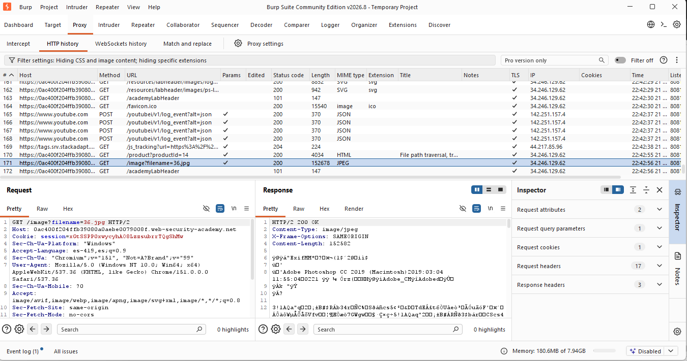
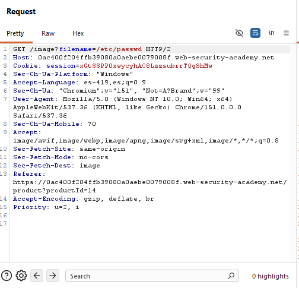
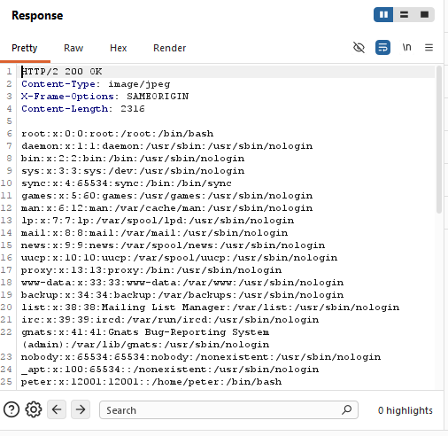
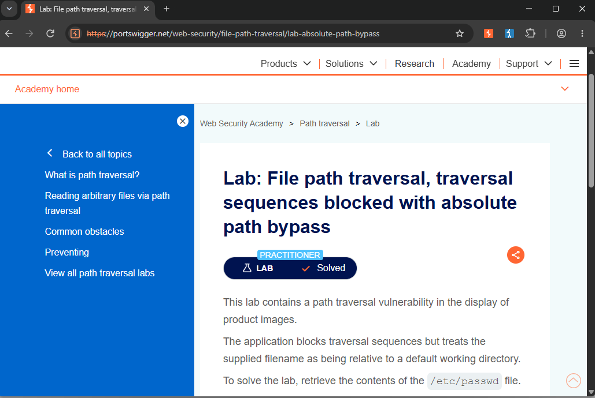

/// LAB_08_ABSOLUTE_PATH_BYPASS
> CNO_IV // PORTSWIGGER // ABSOLUTE_PATH_BYPASS... [TRAVERSAL_BLOCK_BYPASSED]
Actividad 08 — Absolute Path Bypass
File path traversal, traversal sequences blocked with absolute path bypass
Laboratorio práctico de PortSwigger Web Security Academy enfocado en la identificación y explotación de una vulnerabilidad de File Path Traversal mediante una ruta absoluta.
El laboratorio permite analizar cómo una aplicación puede implementar un filtro que bloquea las secuencias tradicionales de recorrido de directorios, pero continuar siendo vulnerable cuando permite que el usuario proporcione directamente una ruta absoluta.
Nivel
Practitioner
El laboratorio corresponde al nivel Practitioner de PortSwigger Web Security Academy.
Tipo de explotación
File Path Traversal — Absolute Path Bypass
Explotación de una vulnerabilidad de File Path Traversal mediante el uso de una ruta absoluta como mecanismo para evadir el bloqueo de las secuencias tradicionales de recorrido de directorios.
Objetivo
El objetivo del laboratorio es identificar y explotar una vulnerabilidad de File Path Traversal presente en la funcionalidad encargada de mostrar las imágenes de los productos.
La aplicación bloquea las secuencias tradicionales de recorrido de directorios, como ../. Sin embargo, el valor proporcionado mediante el parámetro filename continúa siendo procesado como una ruta de archivo.
La finalidad específica consiste en utilizar una ruta absoluta para evadir la restricción existente y recuperar el contenido del archivo:
Archivo objetivo
/etc/passwd
Explicación técnica de la vulnerabilidad
La vulnerabilidad de File Path Traversal ocurre cuando una aplicación permite que datos controlados por el usuario influyan directamente en la ubicación de un archivo que será procesado o recuperado por el servidor.
En este laboratorio, la aplicación utiliza el endpoint /image para recuperar las imágenes asociadas a los productos. El archivo solicitado se determina mediante el parámetro filename.
La solicitud original identificada fue:
GET /image?filename=36.jpg HTTP/2
El valor 36.jpg corresponde a una imagen solicitada normalmente por la aplicación.
En este laboratorio, las secuencias tradicionales de Path Traversal son bloqueadas. Por lo tanto, un payload como ../../../etc/passwd no constituye el método de explotación esperado.
Sin embargo, la aplicación continúa aceptando una ruta absoluta proporcionada directamente mediante el parámetro filename. Debido a esto, fue posible sustituir el nombre de la imagen por:
/etc/passwd
La aplicación procesó esta ruta y devolvió el contenido del archivo solicitado. Esto demuestra que el mecanismo de protección únicamente bloquea determinadas secuencias de traversal, pero no restringe correctamente el destino final del archivo solicitado.
Procedimiento
01 // Objetivo del procedimiento
El objetivo consiste en identificar el parámetro utilizado por la aplicación para recuperar las imágenes y comprobar si puede ser manipulado para acceder a un archivo ubicado fuera del directorio esperado.
02 // Contexto técnico
La aplicación utiliza el endpoint /image para recuperar las imágenes asociadas a los productos.
La solicitud utiliza el parámetro filename para indicar el recurso que debe ser recuperado por el servidor.
La solicitud original identificada fue:
GET /image?filename=36.jpg HTTP/2
El valor 36.jpg corresponde a la imagen solicitada normalmente por la aplicación.
03 // Secuencia de ejecución
- Se accedió al laboratorio correspondiente de PortSwigger Web Security Academy.
- Se ingresó a una página de producto para identificar la solicitud utilizada para recuperar su imagen.
- Mediante Burp Suite, específicamente en Proxy → HTTP history, se identificó la solicitud correspondiente a la imagen.
- Se identificó el endpoint /image y el parámetro filename.
- La solicitud original utilizaba el archivo 36.jpg.
- La solicitud fue enviada a Burp Suite Repeater para poder modificar manualmente el parámetro.
- Se sustituyó el valor filename=36.jpg por: filename=/etc/passwd
- La solicitud modificada quedó de la siguiente manera: GET /image?filename=/etc/passwd HTTP/2
- No fue necesario utilizar secuencias ../, ya que el objetivo consiste en evadir esta restricción mediante el uso de una ruta absoluta.
- Se envió la solicitud modificada desde Burp Suite Repeater mediante la opción Send.
- Se analizó la respuesta HTTP obtenida.
- La respuesta devolvió el contenido del archivo /etc/passwd.
- Finalmente, se regresó al laboratorio en Web Security Academy y se verificó que apareciera Lab Solved.
04 // Solicitud HTTP original
Mediante Burp Suite se identificó en Proxy → HTTP history la solicitud correspondiente a la imagen del producto.
La solicitud observada fue:
GET /image?filename=36.jpg HTTP/2

La solicitud utiliza el parámetro filename, cuyo valor original es 36.jpg. Este parámetro determina el recurso que será solicitado por el servidor y constituye el punto de entrada analizado para comprobar la existencia de una vulnerabilidad de Path Traversal.
05 // Payload utilizado
La solicitud fue enviada a Burp Suite Repeater para modificar manualmente el valor del parámetro filename.
El valor original:
filename=36.jpg
fue sustituido por:
filename=/etc/passwd
La solicitud resultante fue:
GET /image?filename=/etc/passwd HTTP/2
No fue necesario utilizar secuencias ../. En su lugar, se proporcionó directamente una ruta absoluta correspondiente al archivo objetivo.

La modificación demuestra que el mecanismo de protección implementado por la aplicación no impide el uso de rutas absolutas. El parámetro filename continúa siendo interpretado por el servidor como una ubicación de archivo.
06 // Explicación del payload
El payload utilizado fue:
/etc/passwd
A diferencia de un ataque de Path Traversal tradicional, este payload no utiliza secuencias ../.
/etc/passwd es una ruta absoluta de sistemas Linux y Unix. La ruta comienza desde la raíz del sistema de archivos mediante el carácter /.
El laboratorio bloquea las secuencias tradicionales de recorrido de directorios, pero no impide que el usuario proporcione directamente una ruta absoluta.
Por esta razón, al sustituir 36.jpg por /etc/passwd, el servidor procesó directamente la ubicación indicada y devolvió el contenido del archivo.
El éxito del payload demuestra que la protección existente no valida de manera adecuada que el archivo solicitado permanezca dentro del directorio autorizado para las imágenes.
07 // Respuesta vulnerable
Después de enviar la solicitud modificada mediante Burp Suite Repeater, el servidor respondió:
HTTP/2 200 OK
La respuesta contenía el contenido del archivo /etc/passwd.
Entre las entradas observadas se encontraron:
root:x:0:0:root:/root:/bin/bash
peter:x:12001:12001::/home/peter:/bin/bash

El contenido obtenido confirma que el servidor procesó la ruta absoluta proporcionada mediante filename y devolvió el recurso solicitado.
La respuesta demuestra que el bloqueo de las secuencias de traversal no fue suficiente para impedir el acceso a archivos ubicados fuera del directorio esperado.
08 // Confirmación de Lab Solved
Después de comprobar la respuesta vulnerable, se regresó al laboratorio de PortSwigger Web Security Academy.
La plataforma mostró la confirmación: Lab Solved.

La confirmación demuestra que el objetivo del laboratorio fue alcanzado correctamente mediante el uso de una ruta absoluta para evadir el bloqueo de las secuencias tradicionales de Path Traversal.
09 // Mitigación recomendada
Para prevenir este tipo de vulnerabilidad, la aplicación no debe permitir que los datos proporcionados directamente por el usuario determinen de forma arbitraria la ubicación de un archivo dentro del sistema.
Se recomienda utilizar identificadores internos o una lista controlada de nombres de archivos en lugar de aceptar rutas proporcionadas por el cliente.
Cuando sea necesario trabajar con rutas, el servidor debe validar el resultado final y comprobar que el archivo solicitado permanezca dentro del directorio autorizado. Esta validación debe considerar tanto secuencias de recorrido como rutas absolutas y otras formas de manipulación de rutas.
Una estrategia adicional consiste en separar los identificadores utilizados por el cliente de las rutas reales del sistema de archivos, evitando exponer directamente la estructura interna del servidor.
Conclusión
El laboratorio permitió comprobar de manera práctica una vulnerabilidad de File Path Traversal mediante un bypass basado en una ruta absoluta.
Aunque la aplicación bloqueaba las secuencias tradicionales de recorrido de directorios, el parámetro filename continuaba permitiendo especificar directamente una ruta absoluta.
Mediante la modificación:
GET /image?filename=36.jpg HTTP/2
a:
GET /image?filename=/etc/passwd HTTP/2
fue posible obtener el contenido de /etc/passwd.
Finalmente, la plataforma confirmó la explotación mediante Lab Solved.
Este ejercicio demuestra que una protección basada únicamente en el bloqueo de determinadas secuencias de traversal no es suficiente. La aplicación debe controlar de manera integral las rutas de archivo y garantizar que los recursos solicitados permanezcan dentro de los directorios autorizados.
Documento de la actividad
Consulta el documento completo de la Actividad 08, correspondiente al laboratorio File path traversal, traversal sequences blocked with absolute path bypass , donde se presenta la documentación técnica y las evidencias del procedimiento realizado.
Ver documento PDFRoad to Hall of Fame
Regresa al recorrido principal para consultar los demás laboratorios del módulo.
Volver al Road to Hall of Fame